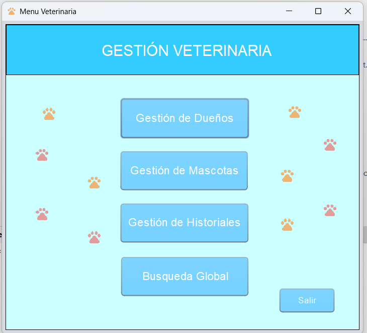
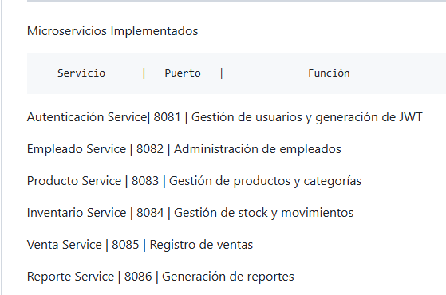
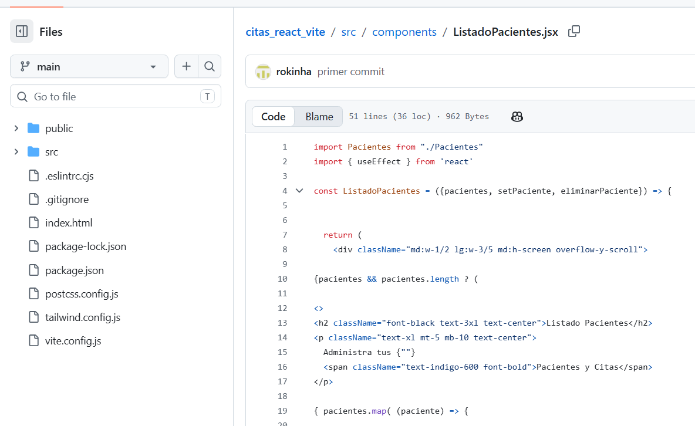

Sistema de Gestión Veterinaria
Sistema de escritorio desarrollado en Java Swing, conectado a MySQL, para la gestión de dueños, mascotas, historial clínico y búsqueda global.
Analista Programador
Soy estudiante de analista programador interesado en el desarrollo de aplicaciones web y tecnologías de software.
Ver mis proyectosActualmente me estoy formando como Analista Programador, desarrollando conocimientos en programación, bases de datos, desarrollo web y servicios en la nube.
Mi objetivo profesional es seguir desarrollándome como programador y participar en proyectos tecnológicos que permitan resolver problemas reales.

Sistema de escritorio desarrollado en Java Swing, conectado a MySQL, para la gestión de dueños, mascotas, historial clínico y búsqueda global.

Sistema backend basado en una arquitectura de microservicios para administrar usuarios, empleados, productos, inventario, ventas y reportes.

Aplicación frontend para la gestión y agenda de pacientes, desarrollada con React y Vite, sin conexión a un backend.
Correo institucional: ma.posada@duocuc.cl
Correo personal: matiasignacioposadaverreni@gmail.com
Nacionalidad: Chileno
Número celular: +56 978441549